Stage R2.7 membangun fondasi PPOB end-to-end: skema database, modul backend Clean Architecture, REST API customer, dan antarmuka customer — dengan provider biller yang sengaja fail-closed karena integrasi nyata adalah scope R2.8.
| Keputusan | Pilihan | Konsekuensi |
|---|---|---|
| Sumber dana PPOB | Saldo gabungan | Serap Wallet.ppobBalance (benefit) dulu, sisanya dari balance utama — atomik dalam satu transaksi Prisma, tercatat di ledger. |
| Cakupan kategori | Langsung luas | 6 kategori di-seed sejak fondasi, bukan hanya pulsa/data/PLN. |
| Provider biller | fail-closed | NoPpobProviderGateway selalu menolak → order REFUNDED dengan kompensasi penuh. Provider nyata (Digiflazz dsb.) masuk di R2.8 lewat port PpobProviderGateway tanpa mengubah service. |
| Kepatuhan Play | aman | Pembayaran via saldo internal; nol tautan eksternal/WebView/CTA keluar. Tile PPOB sah pada grid distribusi Play. |
Backend mengikuti Clean Architecture 4-layer per modul; customer UI adalah modul fitur berdiri sendiri pertama di user_app (bukan part of) — blueprint modernisasi mengikuti pola driver_app.
| Lapisan | Isi |
|---|---|
domain | ppobModels.ts, kontrak PpobRepository, port PpobProviderGateway (batas R2.8) |
application | PpobCatalogService, PpobOrderService — inquiry, create atomik, idempotency, kompensasi refund |
infrastructure | PrismaPpobRepository (row lock + ledger dalam $transaction), NoPpobProviderGateway |
presentation | Routes /api/v1/ppob/* + validator zod + controller; semua requireAuth |
Flutter features/ppob | domain (model + PpobApiException), data (repository typedef-wire + demo repository nol-network), application (Riverpod providers), presentation (4 layar + shared widgets) |
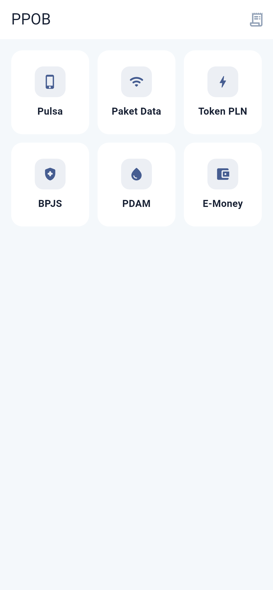
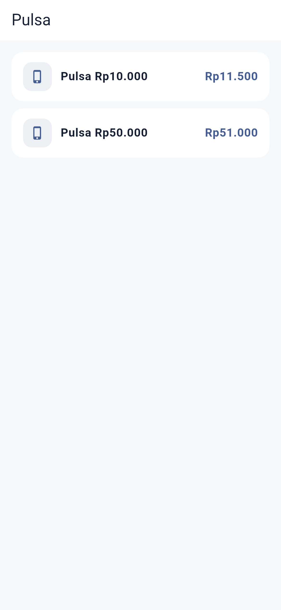
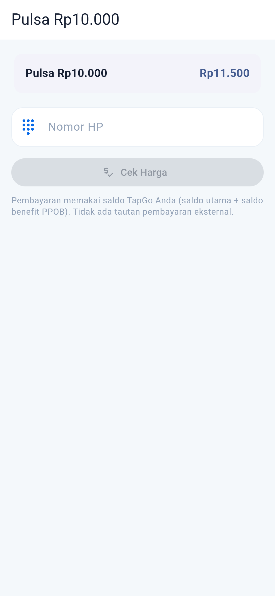
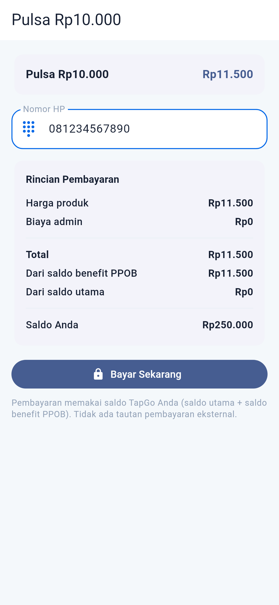
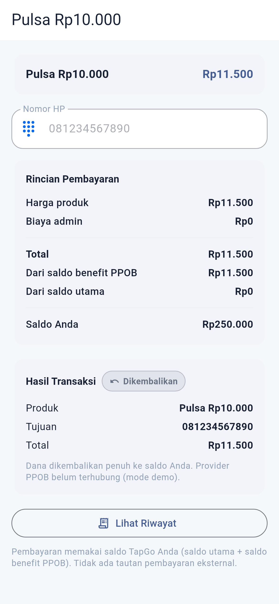
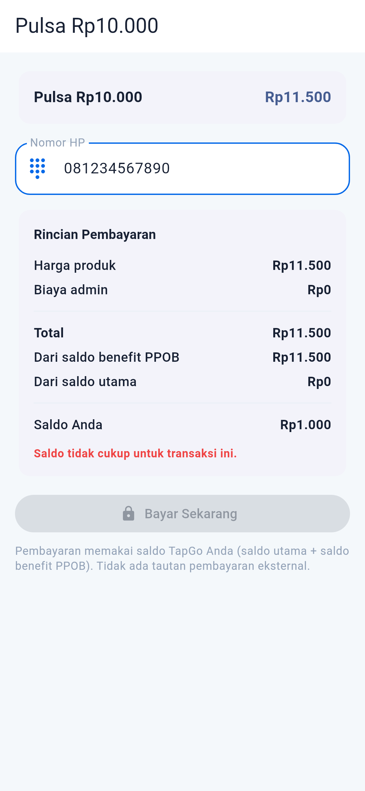
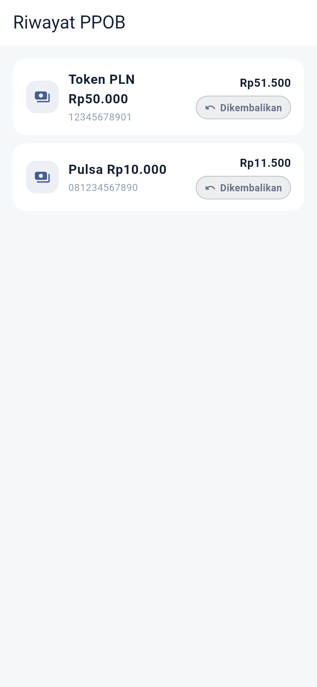
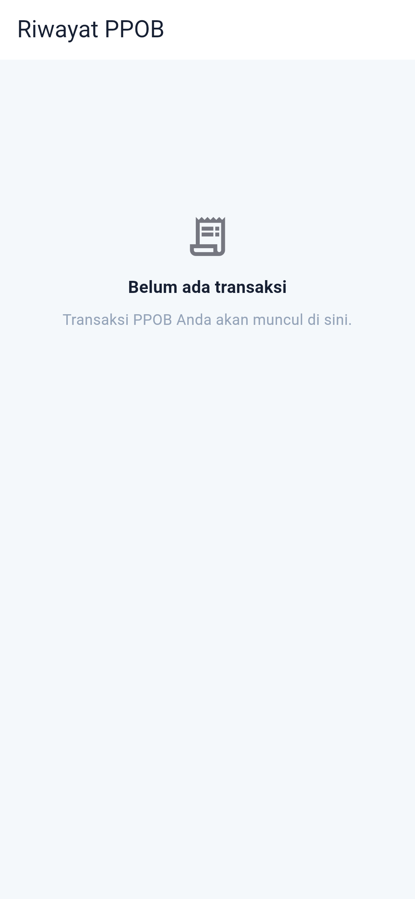
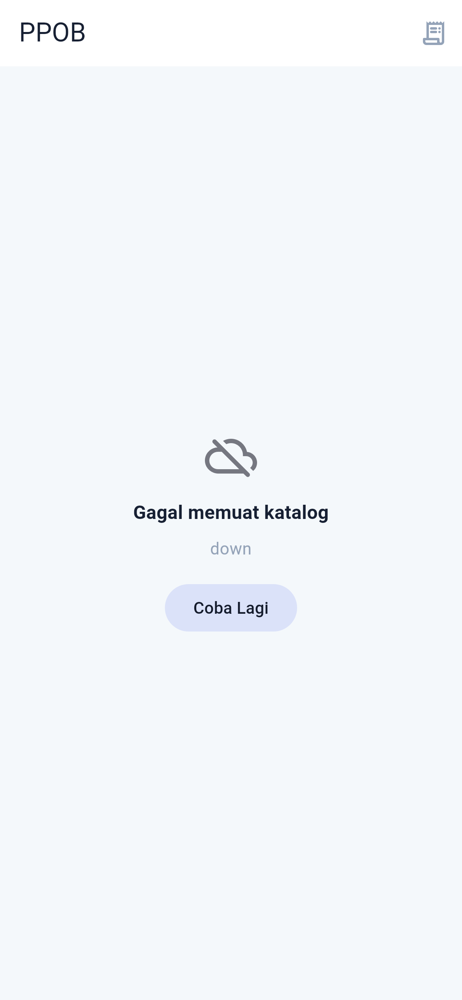
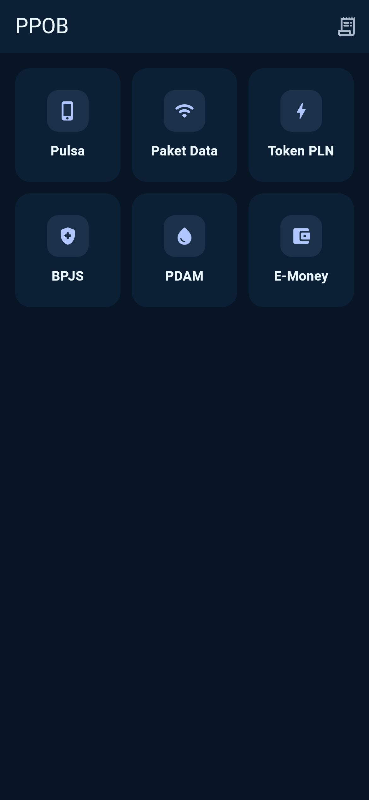
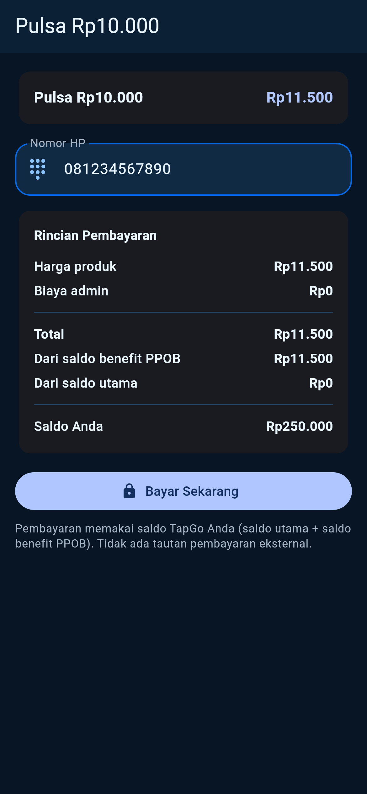
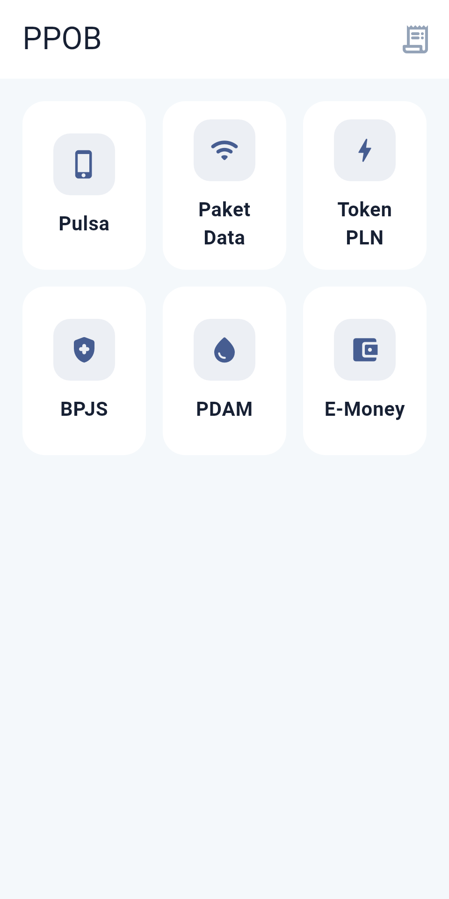
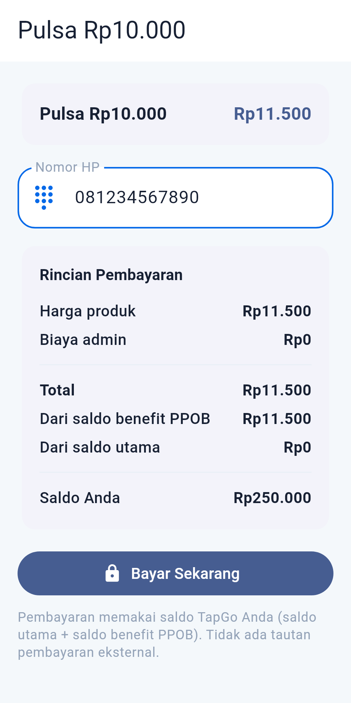
Contact sheet lengkap: R2_7_PPOB_CONTACT_SHEET.png
| # | Item | Bukti | Status |
|---|---|---|---|
| 1 | Katalog 6 kategori luas dari backend | Integrasi (6 kategori, 18 produk) · shot 01 | pass |
| 2 | Saldo gabungan: benefit dulu, fallback utama | Unit debit gabungan · shot 04 | pass |
| 3 | Inquiry read-only (tidak menggerakkan dana) | Integrasi inquiry | pass |
| 4 | Validasi pola nomor tujuan per produk | Unit + integrasi PPOB_TARGET_INVALID | pass |
| 5 | Idempotency: replay tanpa debit ganda (200) | Unit + integrasi replay | pass |
| 6 | Konflik idempotency → 409 | Unit + integrasi | pass |
| 7 | Fail-closed: REFUNDED + saldo kembali penuh + ledger konsisten | Integrasi fail-closed · shot 05 | pass |
| 8 | Saldo tidak cukup → 402 tanpa order | Integrasi · shot 06 | pass |
| 9 | Privasi: order orang lain 404 | Integrasi isolasi antar-user | pass |
| 10 | Anti-steering: nol tautan eksternal/WebView | Widget test + copy layar | pass |
| 11 | Single-flight UI (double-tap = 1 order) | Widget test single-flight | pass |
| 12 | Dark mode + 320 dp tanpa overflow | Widget test + shot 09–12 | pass |
| 13 | Privacy UI: nol token/PII ter-render | Widget test privacy | pass |
| 14 | Entry point Play-safe di dashboard | widget_test.dart semantics Buka layanan PPOB | pass |
REFUNDED — ini perilaku yang benar: lebih baik gagal jujur dengan dana kembali penuh daripada menggantung dana pengguna. R2.8 mengganti NoPpobProviderGateway dengan provider asinkron (Digiflazz dsb.) + settlement via webhook/polling; status PENDING/PROCESSING/SUCCESS sudah dimodelkan dan diuji di domain.TAPGO_PPOB_DEMO_MODE=true) melayani katalog mini nol-network dan jujur mensimulasikan fail-closed.| Lapisan | Perintah |
|---|---|
| Backend (unit + integrasi) | cd apps/backend && TAPGO_TEST_DATABASE_URL=... npx vitest run tests/ppob/ |
| Widget test | cd apps/user_app && flutter test test/ppob_customer_test.dart |
| Bukti visual | flutter test test/ppob_visual_evidence_test.dart --dart-define=TAPGO_PPOB_VISUAL=true --update-goldens |
Dokumen pendamping: docs/release-2/R2_7_PPOB_ACCEPTANCE_CLOSURE.md
{kind=link}